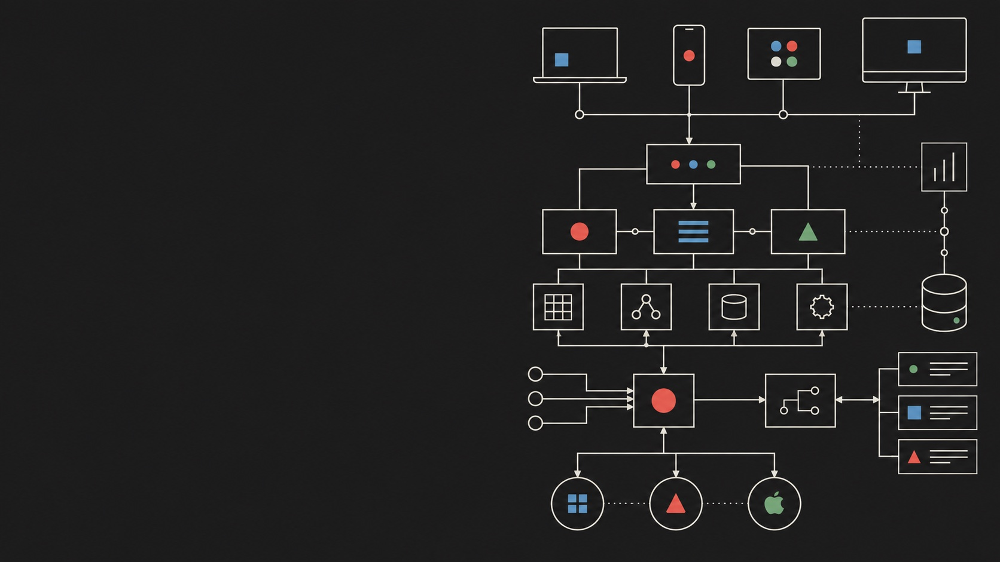
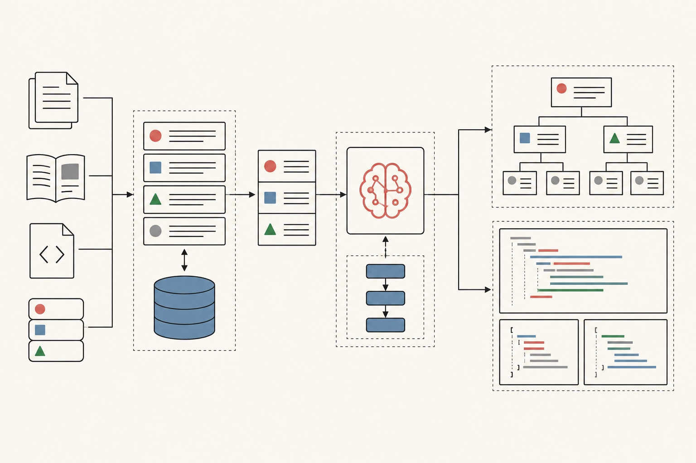
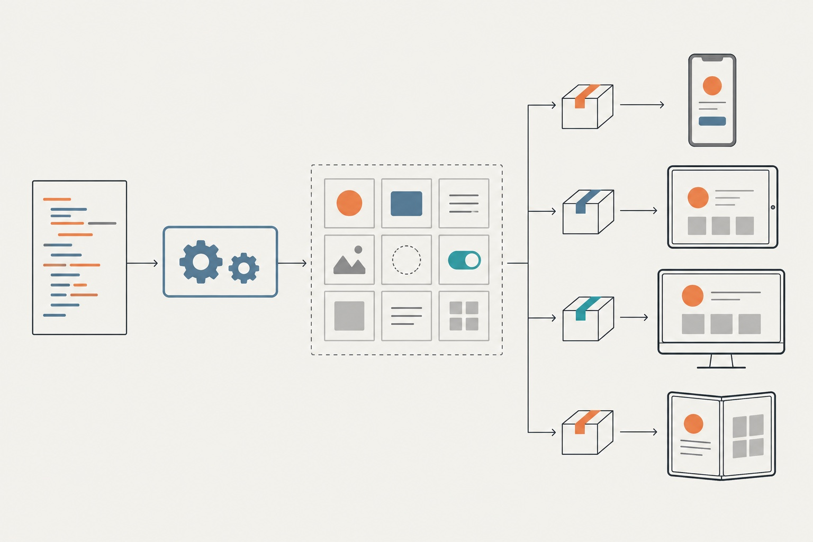
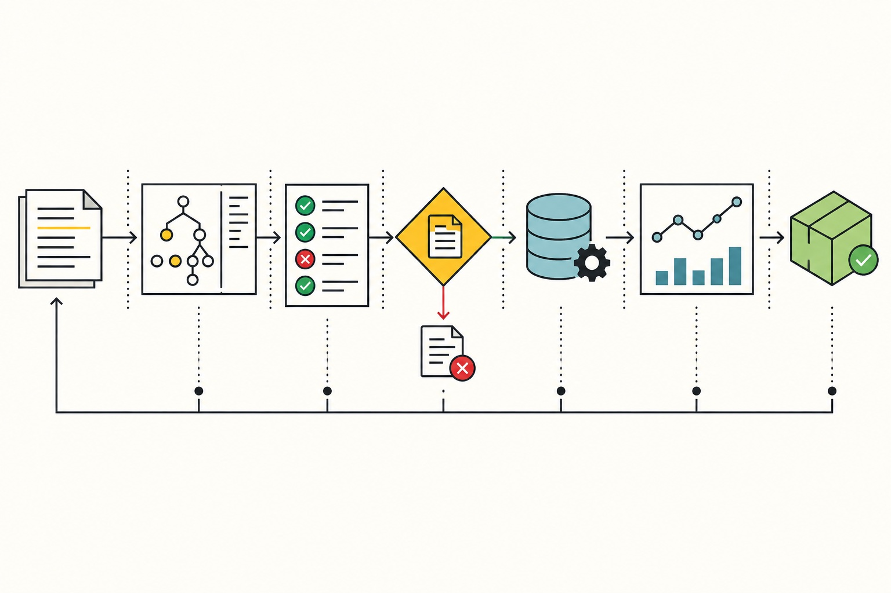

Open to opportunities
Software Engineer
Yafei
Shuai
Building AI agents and cross-platform developer infrastructure at scale.
01
Introduction
I turn complex engineering systems into reliable products that help teams build, ship, and operate with confidence.
I’m a software engineer with extensive experience across frontend development, cross-platform runtimes, developer tooling, platform governance, and AI-powered workflows.
My recent work connects deep infrastructure with practical AI: retrieval-augmented agents, design-to-DSL generation, reusable skills, and the quality systems needed to run them at scale.
02
Selected work
Systems designed to make complex work simpler.

AI Agent for a Dynamic UI Platform
A retrieval-augmented agent for technical Q&A, design-to-DSL generation, and reusable platform skills.

Unified Cross-Platform Runtime
One component model across iOS, Android, and HarmonyOS, backed by tooling, migration, and quality gates.

Engineering Governance Platform
A full lifecycle platform combining AST analysis, CI/CD enforcement, approval workflows, runtime reporting, and operational dashboards.
03
How I work
Engineering judgment before engineering output.
Understand the system
I start from constraints, architecture, and real operating conditions—not an isolated feature request.
Design for adoption
Infrastructure creates value only when teams can understand it, adopt it, and move faster with it.
Close the loop
I connect implementation with rollout, measurement, quality gates, and operational feedback.
04
Experience
Extensive experience across products, platforms, and infrastructure.
2021 — Present
Meituan
Software Engineer · Artificial Intelligence Application Engineer
AI agents, dynamic UI platforms, cross-platform runtimes, CI/CD quality systems, and developer infrastructure.
2020 — 2021
PalFish
Frontend Engineer
Live classroom systems, WebRTC error handling, monitoring, playback, and shared Web/App component contracts.
2016 — 2020
Tencent
Frontend Engineer
Email products, browser extensions, document collaboration features, JSBridge, and web performance.
Education
Taiyuan University of Technology Sep 2012 — Jul 2016
B.E. in Software Engineering